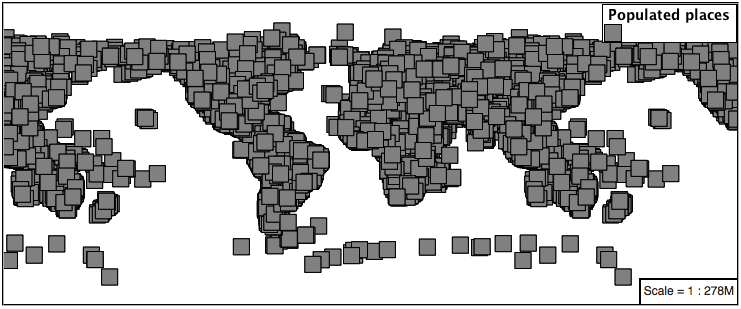

5.4. Points¶
The next stop of the mbstyle styling tour is the representation of points.

Review of point symbology:
Points are used to represent a location only, and do not form a shape. The visual width of lines do not change depending on scale.
SLD uses a PointSymbolizer record how the shape of a line is drawn.
Labeling of points is anchored to the point location.
As points have no inherent shape of of their own, emphasis is placed on marking locations with an appropriate symbol.
Reference:
Point (User Manual | SLD Reference )
This exercise makes use of the ne:populated_places layer.
Navigate to the Styles page.
Click Add a new style and choose the following:
Name:
point_example
Workspace:
No workspace
Format:
MBStyle
Replace the initial MBStyle definition with the following and click apply:
{ "version": 8, "name": "point_example", "sprite": "http://localhost:8080/geoserver/styles/sprites" "layers": [ { "id": "point_example", "type": "symbol", "source-layer": "ne:populated_places", "layout": { "icon-image": "grey_circle", } } ] }
And use the Layer Preview tab to preview the result.
5.4.1. Sprite¶
The symbol layer controls the display of point data. Points are typically represented with an icon-image.
MBStyle uses a spritesheet defined at the top-level of the style to define a set of icons. You can view the names of all the icons in the spritesheet by looking at its json definition, at http://localhost:8080/geoserver/styles/sprites.json.
Change the symbol used by the style to a square:
{ "version": 8, "name": "point_example", "sprite": "http://localhost:8080/geoserver/styles/sprites" "layers": [ { "id": "point_example", "type": "symbol", "source-layer": "ne:populated_places", "layout": { "icon-image": "grey_square16", } } ] }
Map Preview:
Before we continue we will use a selector to cut down the amount of data shown to a reasonable level.
{ "version": 8, "name": "point_example", "sprite": "http://localhost:8080/geoserver/styles/sprites" "layers": [ { "id": "point_example", "type": "symbol", "source-layer": "ne:populated_places", "filter": ["<", "SCALERANK", 1], "layout": { "icon-image": "grey_square16", } } ] }
Resulting in a considerably cleaner image:

Additional properties are available to control an icon’s presentation:
The icon-size property is used to control symbol size.
The icon-rotate property controls orientation, accepting input in degrees.
Trying these two settings together:
{ "version": 8, "name": "point_example", "sprite": "http://localhost:8080/geoserver/styles/sprites" "layers": [ { "id": "point_example", "type": "symbol", "source-layer": "ne:populated_places", "filter": ["<", "SCALERANK", 1], "layout": { "icon-image": "grey_square16", "icon-size": 0.75, "icon-rotate": 45 } } ] }
Results in each location being marked with a diamond:

5.4.2. Circle¶
Another way of displaying point data is using the circle layer. Rather than rendering an icon from a preset sprite sheet, the circle layer lets us chose size and color for a simple circle.
Modify the style to render a grey circle using the circle layer:
{ "version": 8, "name": "point_example", "layers": [ { "id": "point_example", "type": "circle", "source-layer": "ne:populated_places", "paint": { "circle-color": "gray", "circle-radius": 8 "circle-stroke-color": "black", "circle-stroke-width": 1 } } ] }
And use the Layer Preview tab to preview the result.
5.4.3. Label¶
Labeling is now familiar from our experience with LineString and Polygons.

The symbol layer with the label property are used to to label Point Locations.
Replace
point_examplewith the following:{ "version": 8, "name": "point_example", "layers": [ { "id": "point_circle", "type": "circle", "source-layer": "ne:populated_places", "paint": { "circle-color": "gray", "circle-radius": 8 "circle-stroke-color": "black", "circle-stroke-width": 1 } }, { "id": "point_label", "source-layer": "ne:populated_places", "filter": ["<", "SCALERANK", 1], "type": "symbol", "layout": { "text-field": "{NAME}" }, "paint": { "text-color": "gray" } } ] }
Confirm the result in
Mappreview.
Each label is drawn starting from the provided point - which is unfortunate as it assures each label will overlap with the symbol used. To fix this limitation we will make use of the MBStyle controls for label placement:
text-anchor provides a value expressing how a label is aligned with respect to the starting label position.
text-translate is used to provide an initial displacement using and x and y offset. For points this offset is recommended to adjust the label position away for the area used by the symbol.
Note
The property text-anchor defines an anchor position relative to the bounding box formed by the resulting label. This anchor position is snapped to the label position generated by the point location and displacement offset.
Using these two facilities together we can center our labels below the symbol, taking care that the displacement used provides an offset just outside the area required for the symbol size.
{ "version": 8, "name": "point_example", "layers": [ { "id": "point_circle", "type": "circle", "source-layer": "ne:populated_places", "paint": { "circle-color": "gray", "circle-radius": 8 "circle-stroke-color": "black", "circle-stroke-width": 1 } }, { "id": "point_label", "source-layer": "ne:populated_places", "filter": ["<", "SCALERANK", 1], "type": "symbol", "layout": { "text-field": "{NAME}", "text-anchor": "top" }, "paint": { "text-color": "black", "text-translate": [0, 12] } } ] }
Each label is now placed under the mark.

One remaining issue is the overlap between labels and symbols.
MBStyle provides various parameters to control label rendering and conflict resolution, preventing labels from overlapping any symbols.
icon-allow-overlap and text-allow-overlap allows the rendering engine to draw the indicated symbol atop previous labels and icons.
icon-ignore-placement and text-ignore-placement allows the rendering engine to draw labels and icons over top of the indicated symbol.
icon-padding and text-padding tells the rendering engine to provide a minimum distance between the icons and text on the map, ensuring they do not overlap with other labels or icons.
The -allow-overlap and -ignore-placement parameters are false by default, which is the behavior we want. Update our example to use text-padding:
{ "version": 8, "name": "point_example", "layers": [ { "id": "point_circle", "type": "circle", "source-layer": "ne:populated_places", "paint": { "circle-color": "gray", "circle-radius": 8 "circle-stroke-color": "black", "circle-stroke-width": 1 } }, { "id": "point_label", "source-layer": "ne:populated_places", "filter": ["<", "SCALERANK", 1], "type": "symbol", "layout": { "text-field": "{NAME}", "text-anchor": "top", "text-padding": 2 }, "paint": { "text-color": "black", "text-translate": [0, 12] } } ] }
Resulting in a considerably cleaner image:

5.4.4. Dynamic Styling¶
We will quickly use minzoom and maxzoom to select content based on SCALERANK selectors.
{ "version": 8, "name": "point_example", "layers": [ { "id": "point_7", "type": "circle", "source-layer": "ne:populated_places", "filter": ["<", "SCALERANK", 7], "minzoom": 6, "maxzoom": 7, "paint": { "circle-color": "gray", "circle-radius": 8 "circle-stroke-color": "black", "circle-stroke-width": 1 } }, { "id": "point_5", "type": "circle", "source-layer": "ne:populated_places", "filter": ["<", "SCALERANK", 5], "minzoom": 5, "maxzoom": 6, "paint": { "circle-color": "gray", "circle-radius": 8 "circle-stroke-color": "black", "circle-stroke-width": 1 } }, { "id": "point_4", "type": "circle", "source-layer": "ne:populated_places", "filter": ["<", "SCALERANK", 4], "minzoom": 4, "maxzoom": 5, "paint": { "circle-color": "gray", "circle-radius": 8 "circle-stroke-color": "black", "circle-stroke-width": 1 } }, { "id": "point_3", "type": "circle", "source-layer": "ne:populated_places", "filter": ["<", "SCALERANK", 3], "minzoom": 3, "maxzoom": 4, "paint": { "circle-color": "gray", "circle-radius": 8 "circle-stroke-color": "black", "circle-stroke-width": 1 } }, { "id": "point_2", "type": "circle", "source-layer": "ne:populated_places", "filter": ["<", "SCALERANK", 2], "minzoom": 2, "maxzoom": 3, "paint": { "circle-color": "gray", "circle-radius": 8 "circle-stroke-color": "black", "circle-stroke-width": 1 } }, { "id": "point_1", "type": "circle", "source-layer": "ne:populated_places", "filter": ["<", "SCALERANK", 1], "maxzoom": 2, "paint": { "circle-color": "gray", "circle-radius": 8 "circle-stroke-color": "black", "circle-stroke-width": 1 } }, { "id": "point_0", "type": "circle", "source-layer": "ne:populated_places", "minzoom": 7, "paint": { "circle-color": "gray", "circle-radius": 8 "circle-stroke-color": "black", "circle-stroke-width": 1 } } ] }
Click Submit to update the Map after each step.

To add labeling we can add a symbol layer for each of the existing circle layers.
{ "version": 8, "name": "point_example", "layers": [ { "id": "point_7", "type": "circle", "source-layer": "ne:populated_places", "filter": ["<", "SCALERANK", 7], "minzoom": 6, "maxzoom": 7, "paint": { "circle-color": "gray", "circle-radius": 8 "circle-stroke-color": "black", "circle-stroke-width": 1 } }, { "id": "point_7_text", "type": "symbol", "source-layer": "ne:populated_places", "filter": ["<", "SCALERANK", 7], "minzoom": 6, "maxzoom": 7, "layout": { "text-field": "{NAME}", "text-font": ["Arial"], "text-size": 10 }, "paint": { "text-color": "black" } }, { "id": "point_5", "type": "circle", "source-layer": "ne:populated_places", "filter": ["<", "SCALERANK", 5], "minzoom": 5, "maxzoom": 6, "paint": { "circle-color": "gray", "circle-radius": 8 "circle-stroke-color": "black", "circle-stroke-width": 1 } }, { "id": "point_5_text", "type": "symbol", "source-layer": "ne:populated_places", "filter": ["<", "SCALERANK", 5], "minzoom": 5, "maxzoom": 6, "layout": { "text-field": "{NAME}", "text-font": ["Arial"], "text-size": 10 }, "paint": { "text-color": "black" } }, { "id": "point_4", "type": "circle", "source-layer": "ne:populated_places", "filter": ["<", "SCALERANK", 4], "minzoom": 4, "maxzoom": 5, "paint": { "circle-color": "gray", "circle-radius": 8 "circle-stroke-color": "black", "circle-stroke-width": 1 } }, { "id": "point_4_text", "type": "symbol", "source-layer": "ne:populated_places", "filter": ["<", "SCALERANK", 4], "minzoom": 4, "maxzoom": 5, "layout": { "text-field": "{NAME}", "text-font": ["Arial"], "text-size": 10 }, "paint": { "text-color": "black" } }, { "id": "point_3", "type": "circle", "source-layer": "ne:populated_places", "filter": ["<", "SCALERANK", 3], "minzoom": 3, "maxzoom": 4, "paint": { "circle-color": "gray", "circle-radius": 8 "circle-stroke-color": "black", "circle-stroke-width": 1 } }, { "id": "point_3_text", "type": "symbol", "source-layer": "ne:populated_places", "filter": ["<", "SCALERANK", 3], "minzoom": 3, "maxzoom": 4, "layout": { "text-field": "{NAME}", "text-font": ["Arial"], "text-size": 10 }, "paint": { "text-color": "black" } }, { "id": "point_2", "type": "circle", "source-layer": "ne:populated_places", "filter": ["<", "SCALERANK", 2], "minzoom": 2, "maxzoom": 3, "paint": { "circle-color": "gray", "circle-radius": 8 "circle-stroke-color": "black", "circle-stroke-width": 1 } }, { "id": "point_2_text", "type": "symbol", "source-layer": "ne:populated_places", "filter": ["<", "SCALERANK", 2], "minzoom": 2, "maxzoom": 3, "layout": { "text-field": "{NAME}", "text-font": ["Arial"], "text-size": 10 }, "paint": { "text-color": "black" } }, { "id": "point_1", "type": "circle", "source-layer": "ne:populated_places", "filter": ["<", "SCALERANK", 1], "maxzoom": 2, "paint": { "circle-color": "gray", "circle-radius": 8 "circle-stroke-color": "black", "circle-stroke-width": 1 } }, { "id": "point_1_text", "type": "symbol", "source-layer": "ne:populated_places", "filter": ["<", "SCALERANK", 1], "maxzoom": 2, "layout": { "text-field": "{NAME}", "text-font": ["Arial"], "text-size": 10 }, "paint": { "text-color": "black" } }, { "id": "point_0", "type": "circle", "source-layer": "ne:populated_places", "minzoom": 7, "paint": { "circle-color": "gray", "circle-radius": 8 "circle-stroke-color": "black", "circle-stroke-width": 1 } }, { "id": "point_0_text", "type": "symbol", "source-layer": "ne:populated_places", "minzoom": 7, "layout": { "text-field": "{NAME}", "text-font": ["Arial"], "text-size": 10 }, "paint": { "text-color": "black" } } ] }

We will use text-offset to position the label above each symbol, and text-padding to give some extra space around our labels.
Add the following line to each layer:
{ "id": "point_example", "type": "symbol", "source-layer": "ne:populated_places", "minzoom": 7, "layout": { "text-field": "{NAME}", "text-font": ["Arial"], "text-size": 10, "text-padding": 2 }, "paint": { "text-color": "black", "text-translate": [0, -12] } }

Now that we have clearly labeled our cities, zoom into an area you are familiar with and we can look at changing symbology on a case-by-case basis.
We have used expressions previous to generate an appropriate label. Expressions can also be used for many other property settings.
The
ne:populated_placeslayer provides several attributes specifically to make styling easier:SCALERANK: we have already used this attribute to control the level of detail displayed
FEATURECLA: used to indicate different types of cities. We will check for Admin-0 capital cities.
The first thing we will do is calculate the point size using a quick expression:
{ "property": "SCALERANK", "type": "exponential", "stops": [ [0, 4.5], [10, 2.5] ] },
This expression should result in sizes between 5 and 9 and will need to be applied to both point size and label displacement.
{ "id": "point_0", "type": "circle", "source-layer": "ne:populated_places", "minzoom": 7, "paint": { "circle-color": "gray", "circle-radius": { "property": "SCALERANK", "type": "exponential", "stops": [ [0, 4.5], [10, 2.5] ] }, "circle-stroke-color": "black", "circle-stroke-width": 1 } }
{ "id": "point_0_text", "type": "symbol", "source-layer": "ne:populated_places", "minzoom": 7, "layout": { "text-field": "{NAME}", "text-font": ["Arial"], "text-size": 10, "text-padding": 2 }, "paint": { "text-color": "black", "text-translate": { "property": "SCALERANK", "type": "exponential", "stops": [ [0, [0, -8]], [10, [0, -6]] ] }, } }

Next we can use
FEATURECLAto check for capital cities.Adding a selector for capital cities at the top of the rules list:
{ "id": "point_capital", "type": "symbol", "source-layer": "ne:populated_places", "filter": ["all",["<", "SCALERANK", 2], ["==", "FEATURECLA", "Admin-0 capital"]] "minzoom": 2, "layout": { "icon-image": "star", "text-field": "{NAME}", "text-font": ["Arial"], "text-size": 10, "text-padding": 2 }, "paint": { "text-color": "black", "text-translate": [0, -12] } }
Also add the spritesheet url to the top of the style if it is not present:
{ "version": 8, "name": "point_example", "sprite": "http://localhost:8080/geoserver/styles/sprites", }
And updating the populated places selectors to ignore capital cities:
{ "id": "point_7", "type": "circle", "source-layer": "ne:populated_places", "filter": ["all", ["<", "SCALERANK", 7], ["!=", "FEATURECLA", "Admin-0 capital"]], "minzoom": 6, "maxzoom": 7, "paint": { "circle-color": "gray", "circle-radius": { "property": "SCALERANK", "type": "exponential", "stops": [ [0, 4.5], [10, 2.5] ] }, "circle-stroke-color": "black", "circle-stroke-width": 1 } }
{ "id": "point_7_text", "type": "symbol", "source-layer": "ne:populated_places", "filter": ["all", ["<", "SCALERANK", 7], ["!=", "FEATURECLA", "Admin-0 capital"]], "minzoom": 6, "maxzoom": 7, "layout": { "text-field": "{NAME}", "text-font": ["Arial"], "text-size": 10, "text-padding": 2 }, "paint": { "text-color": "black", "text-translate": { "property": "SCALERANK", "type": "exponential", "stops": [ [0, [0, -8]], [10, [0, -6]] ] } } }
{ "id": "point_5", "type": "circle", "source-layer": "ne:populated_places", "filter": ["all", ["<", "SCALERANK", 5], ["!=", "FEATURECLA", "Admin-0 capital"]], "minzoom": 5, "maxzoom": 6, "paint": { "circle-color": "gray", "circle-radius": { "property": "SCALERANK", "type": "exponential", "stops": [ [0, 4.5], [10, 2.5] ] }, "circle-stroke-color": "black", "circle-stroke-width": 1 } }
{ "id": "point_5_text", "type": "symbol", "source-layer": "ne:populated_places", "filter": ["all", ["<", "SCALERANK", 5], ["!=", "FEATURECLA", "Admin-0 capital"]], "minzoom": 5, "maxzoom": 6, "layout": { "text-field": "{NAME}", "text-font": ["Arial"], "text-size": 10, "text-padding": 2 }, "paint": { "text-color": "black", "text-translate": { "property": "SCALERANK", "type": "exponential", "stops": [ [0, [0, -8]], [10, [0, -6]] ] } } }
{ "id": "point_4", "type": "circle", "source-layer": "ne:populated_places", "filter": ["all", ["<", "SCALERANK", 4], ["!=", "FEATURECLA", "Admin-0 capital"]], "minzoom": 4, "maxzoom": 5, "paint": { "circle-color": "gray", "circle-radius": { "property": "SCALERANK", "type": "exponential", "stops": [ [0, 4.5], [10, 2.5] ] }, "circle-stroke-color": "black", "circle-stroke-width": 1 } }
{ "id": "point_4_text", "type": "symbol", "source-layer": "ne:populated_places", "filter": ["all", ["<", "SCALERANK", 4], ["!=", "FEATURECLA", "Admin-0 capital"]], "minzoom": 4, "maxzoom": 5, "layout": { "text-field": "{NAME}", "text-font": ["Arial"], "text-size": 10, "text-padding": 2 }, "paint": { "text-color": "black", "text-translate": { "property": "SCALERANK", "type": "exponential", "stops": [ [0, [0, -8]], [10, [0, -6]] ] } } }
{ "id": "point_3", "type": "circle", "source-layer": "ne:populated_places", "filter": ["all", ["<", "SCALERANK", 3], ["!=", "FEATURECLA", "Admin-0 capital"]], "minzoom": 3, "maxzoom": 4, "paint": { "circle-color": "gray", "circle-radius": 8 "circle-stroke-color": "black", "circle-stroke-width": 1 } }
{ "id": "point_3_text", "type": "symbol", "source-layer": "ne:populated_places", "filter": ["all", ["<", "SCALERANK", 3], ["!=", "FEATURECLA", "Admin-0 capital"]], "minzoom": 3, "maxzoom": 4, "layout": { "text-field": "{NAME}", "text-font": ["Arial"], "text-size": 10, "text-padding": 2 }, "paint": { "text-color": "black", "text-translate": { "property": "SCALERANK", "type": "exponential", "stops": [ [0, [0, -8]], [10, [0, -6]] ] } } }
{ "id": "point_2", "type": "circle", "source-layer": "ne:populated_places", "filter": ["all", ["<", "SCALERANK", 2], ["!=", "FEATURECLA", "Admin-0 capital"]], "minzoom": 2, "maxzoom": 3, "paint": { "circle-color": "gray", "circle-radius": { "property": "SCALERANK", "type": "exponential", "stops": [ [0, 4.5], [10, 2.5] ] }, "circle-stroke-color": "black", "circle-stroke-width": 1 } }
{ "id": "point_2_text", "type": "symbol", "source-layer": "ne:populated_places", "filter": ["all", ["<", "SCALERANK", 2], ["!=", "FEATURECLA", "Admin-0 capital"]], "minzoom": 2, "maxzoom": 3, "layout": { "text-field": "{NAME}", "text-font": ["Arial"], "text-size": 10, "text-padding": 2 }, "paint": { "text-color": "black", "text-translate": { "property": "SCALERANK", "type": "exponential", "stops": [ [0, [0, -8]], [10, [0, -6]] ] } } }
{ "id": "point_1", "type": "circle", "source-layer": "ne:populated_places", "filter": ["<", "SCALERANK", 1], "maxzoom": 2, "paint": { "circle-color": "gray", "circle-radius": { "property": "SCALERANK", "type": "exponential", "stops": [ [0, 4.5], [10, 2.5] ] }, "circle-stroke-color": "black", "circle-stroke-width": 1 } }
{ "id": "point_1_text", "type": "symbol", "source-layer": "ne:populated_places", "filter": ["<", "SCALERANK", 1], "maxzoom": 2, "layout": { "text-field": "{NAME}", "text-font": ["Arial"], "text-size": 10, "text-padding": 2 }, "paint": { "text-color": "black", "text-translate": { "property": "SCALERANK", "type": "exponential", "stops": [ [0, [0, -8]], [10, [0, -6]] ] } } }
{ "id": "point_0", "type": "circle", "source-layer": "ne:populated_places", "filter": ["!=", "FEATURECLA", "Admin-0 capital"], "minzoom": 7, "paint": { "circle-color": "gray", "circle-radius": { "property": "SCALERANK", "type": "exponential", "stops": [ [0, 4.5], [10, 2.5] ] }, "circle-stroke-color": "black", "circle-stroke-width": 1 } }
{ "id": "point_0_text", "type": "symbol", "source-layer": "ne:populated_places", "filter": ["!=", "FEATURECLA", "Admin-0 capital"], "minzoom": 7, "layout": { "text-field": "{NAME}", "text-font": ["Arial"], "text-size": 10, "text-padding": 2 }, "paint": { "text-color": "black", "text-translate": { "property": "SCALERANK", "type": "exponential", "stops": [ [0, [0, -8]], [10, [0, -6]] ] } } }

If you would like to check your work the final file is here:
point_example.mbstyle
5.4.5. Bonus¶
5.4.5.1. Challenge Geometry Location¶
The mark property can be used to render any geometry content.
Challenge: Try this yourself by rendering a polygon layer using a mark property.
Note
Answer discussed at the end of the workbook.
5.4.5.2. Explore Dynamic Symbolization¶
We went to a lot of work to set up selectors to choose between star and circle for capital cities.
This approach is straightforward when applied in isolation:
{ "version": 8, "name": "point_example", "sprite": "http://localhost:8080/geoserver/styles/sprites", "layers": [ { "id": "point_capital", "type": "symbol", "source-layer": "ne:populated_places", "filter": ["==", "FEATURECLA", "Admin-0 capital"] "minzoom": 2, "layout": { "icon-image": "star", } }, { "id": "point_0", "type": "circle", "source-layer": "ne:populated_places", "filter": ["!=", "FEATURECLA", "Admin-0 capital"], "minzoom": 7, "paint": { "circle-color": "gray", "circle-radius": 4, "circle-stroke-color": "black", "circle-stroke-width": 1 } } ] }
When combined with checking another attribute, or checking @scale as in our example, this approach can quickly lead to many rules which can be difficult to keep straight.
Taking a closer look,
icon-imageis expressed using a string:{ "id": "point_capital", "type": "symbol", "source-layer": "ne:populated_places", "filter": ["==", "FEATURECLA", "Admin-0 capital"] "minzoom": 2, "layout": { "icon-image": "star", } }
Which is represented in SLD as:
<sld:PointSymbolizer uom="http://www.opengeospatial.org/se/units/pixel"> <sld:Graphic> <sld:ExternalGraphic> <sld:OnlineResource xmlns:xlink="http://www.w3.org/1999/xlink" xlink:type="simple" xlink:href="http://localhost:8080/geoserver/styles/sprites#icon=${strURLEncode('star')}&size=${strURLEncode(1.0)}"/> <sld:Format>mbsprite</sld:Format> </sld:ExternalGraphic> </sld:Graphic> </sld:PointSymbolizer>
MBStyle provides an opportunity for dynamic symbolization.
This is accomplished by using a function for the value of the icon-image:
{ "version": 8, "name": "point_example", "sprite": "http://localhost:8080/geoserver/styles/sprites", "layers": [ { "id": "point_capital", "type": "symbol", "source-layer": "ne:populated_places", "layout": { "icon-image": { "type": "categorical", "property": "FEATURECLA", "default": "grey_circle", "stops": [ ["Admin-0 capital", "star"] ] } } } ] }
Which is represented in SLD as:
<sld:PointSymbolizer uom="http://www.opengeospatial.org/se/units/pixel"> <sld:Graphic> <sld:ExternalGraphic> <sld:OnlineResource xmlns:xlink="http://www.w3.org/1999/xlink" xlink:type="simple" xlink:href="http://localhost:8080/geoserver/styles/sprites#icon=${strURLEncode(DefaultIfNull(Recode(FEATURECLA,'Admin-0 capital','star'),'grey_circle'))}&size=${strURLEncode(1.0)}"/> <sld:Format>mbsprite</sld:Format> </sld:ExternalGraphic> </sld:Graphic> </sld:PointSymbolizer>
Challenge: Use this approach to rewrite the Dynamic Styling example.
Note
Answer provided at the end of the workbook.